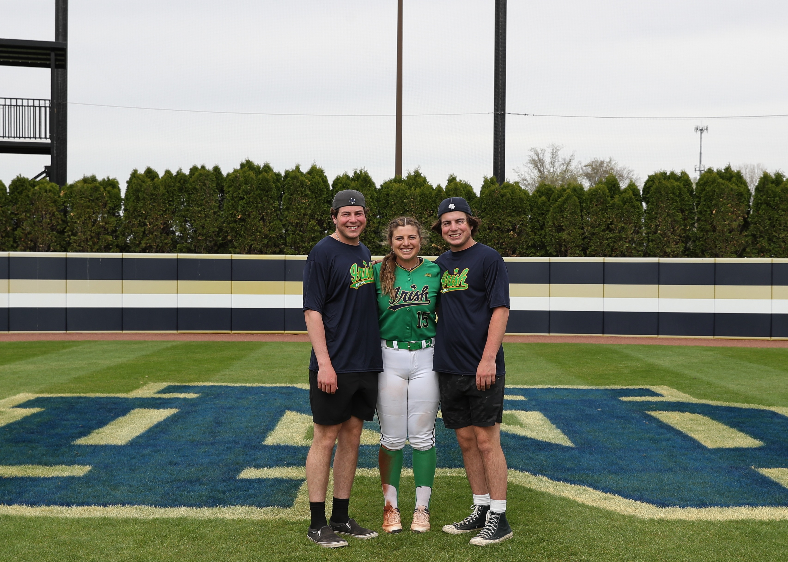

---
categories:
- ""
- ""
date: "2017-10-31T21:28:43-05:00"
description: ""
draft: false
image: pic10.jpg
keywords: ""
slug: bio
title: about me
---


<div id="emma-clark" class="section level1">
<h1>Emma Clark</h1>
<div id="about-me" class="section level2">
<h2>About Me</h2>
<p>Welcome to my background page! My full name is Emma Christine Clark and I am from the United States of America. I was born in New York City, then moved halfway across the country to Chicago, before finally settling in Huntington Beach, California at the age of 8 years old. My best friends are my two little brothers, Michael and Jack, who are not so little anymore as you can see below. I love my family and hometown in California but always wanted to explore and see more. After spending 10 years in my comfort bubble in Southern California, I broke out of it when I moved 3000 kilometers away to the University of Notre Dame, where I earned a BBA in Accountancy. Although the winters were a bit different, I loved every minute of my four years there as a student-athlete.</p>
<p>Being an athlete has always been a large part of my identity for as long as I can remember. It was a dream come true for me to represent my University and travel around the US playing softball for Notre Dame. The sum of my work and achievements as an athlete can be highlited <a href="https://und.com/roster/emma-clark-2/">here.</a>. Aside from athletics, I enjoy deep sea fishing, going to the beach, cooking, and of course travelling.</p>
<p>I chose to come to London because it is one of the largest and most diverse settings for international business. I hope to use this year to learn about people and cultures from every corner of the world and gain a new appreciation and understanding. As I searched for schools in London, it was an easy choice for the MAM program at LBS. LBS has the highest level of prestige and rigor while still fostering a community of support and compassion not only for but among its students. This rich environment will help me pursue my passion for data analytics in the healthcare industry. I cannot wait for the new challenges and experiences this year and my future have to offer!</p>
<p><!-- --></p>
</div>
</div>
